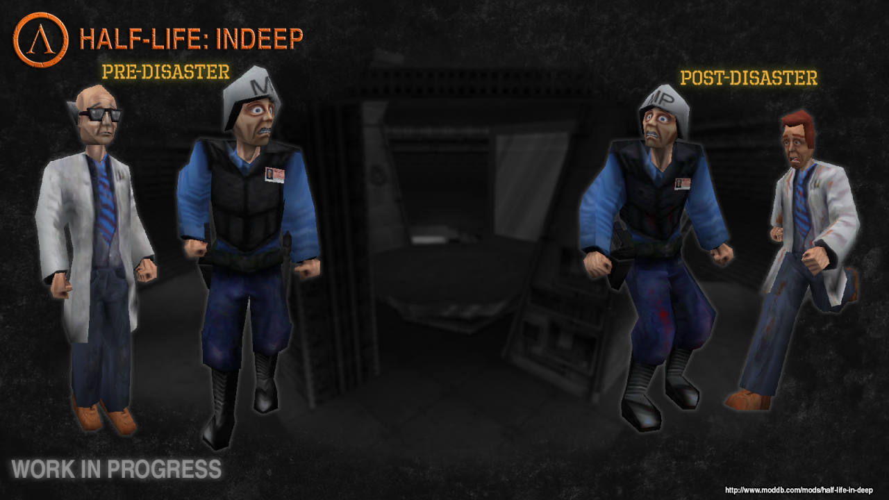
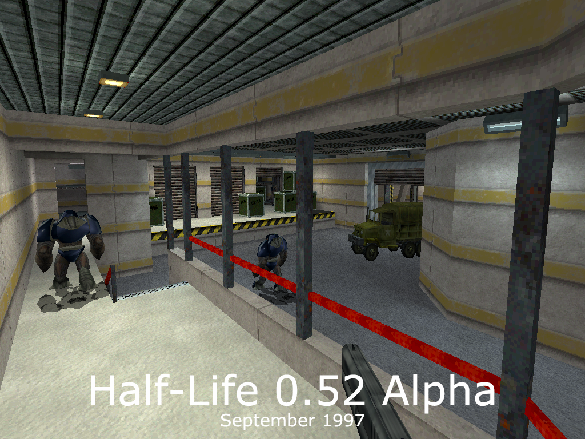
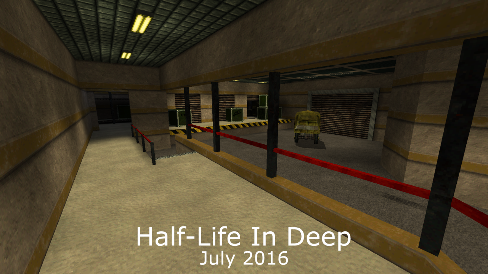

These are screenshots of Jack’s mod, Half-Life In Deep, which is a functional reconstruction of the Half-Life 1 Beta in the goldsrc engine. Yes, this is being worked on, in the year of our Lord 2016.
You will be able to play Half-Life as Ivan the Space Biker once it’s released.